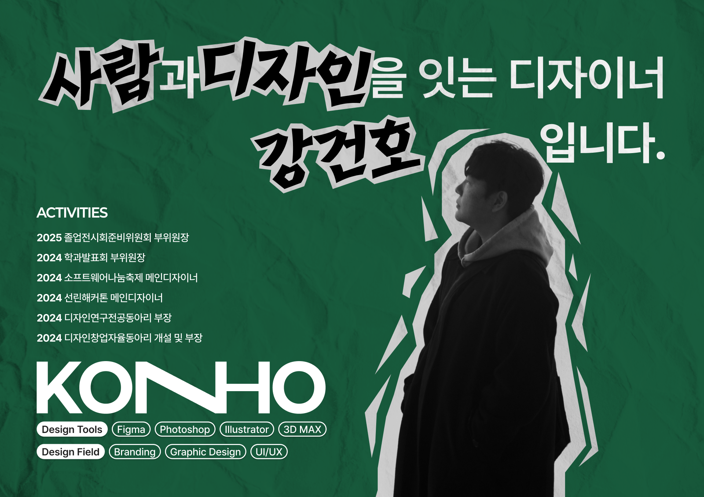
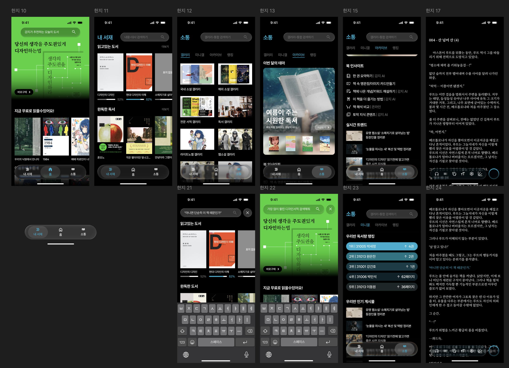

사람과 디자인을 이어주는 디자이너,
강건호의 작업물을 소개합니다.

온결고등학교
온결고등학교는 ‘바우 하우스’의 설립이념을 모티브로 만들어진 디자인특성화고등학교입니다.
작업기간은 총 6개월로 설립이념부터 학과,전공까지 세부적으로 설계하여 디자인하였습니다.

온결고등학교의 심볼 로고는 학과를 상징하는 도형과 학교를 의미하는 프레임이 어우러져,
다양한 학과들이 조화를이루는 모습을 표현했습니다.
겹치는 부분은 활발한 학과 간 교류와 협업을 상징하며, 융합적이고 창의적인 교육 환경을 나타냅니다.
12.5(십이점오)
12.5는 기독교적 의미를 가진 스트리트웨어 브랜드로,
12.5가 가진 뜻인 12월 25일은 예수님이 태어난 특별한 날을 의미하며 12.5의 제품 사용자에게는 입는 순간 순간이
특별했으면 하는 바람으로 시작되었습니다.

12.5는 예수님의 탄생일인 12월 25일을 필기체로 나타낸 것이며,
언뜻 보이는 42는 이스라엘 백성들이 광야를 여행하며 머문 42개의 장소를 의미합니다.
한지
한지는 독서아카이브 어플입니다.
실제 설문조사를 하고 독서어플들의 문제점을 조사 후 문제점들을 보완하여 제작한 UI/UX 작업물입니다.
